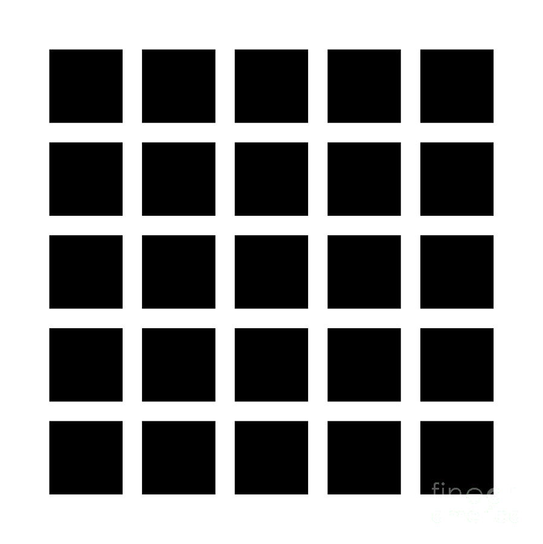
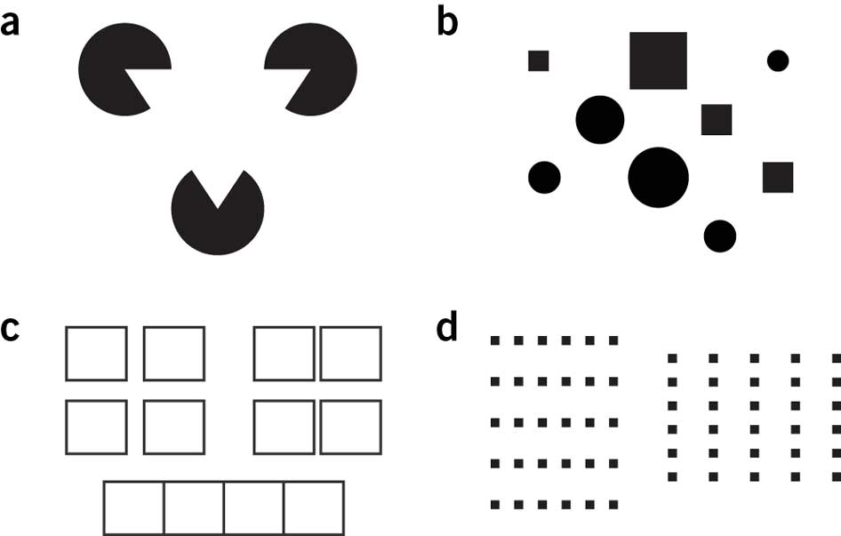

Getting used to ggplot
Data Visualization, Week 2
Kieran Healy, Duke University
Outline for Today
- Housekeeping
- Basic Principles Again
- Introducing
ggplot - Summarizing a Variable
How to Navigate these Slides
- When you view them online, notice the compass in the bottom right corner
- You can go left or right, or sometimes down to more detail.
- Hit the
Escapekey to get an overview of all the slides. On a phone or tablet, pinch to get the slide overview. - You can use the arrow keys (or swipe up and down) in this view, as well.
- Hit
Escapeagain to return to the slide you were looking at. - On a phone or tablet, tap the slide you want.
Reminder
- There are two ways to learn R: the easy way and the tedious way.
- The problem is that the easy way doesn't work.
- You have to practice the examples and work through them manually. Type them out, even if you're just copying at the beginning. It really will help you get used to how the language works.
Reminder
- You will benefit a lot from taking almost any R tutorial, whether from a textbook or online. The syllabus has links.
- For example, Try R.
Principles Again
Perception
- Visualizing data is not just a matter of good taste.
- Basic perceptual processes play a very strong role.
- These have consequences for how we will want to encode data when we visualize it---i.e., how and whether we choose to represent numbers or categories as shapes, colors, lengths, etc.
Perception
- We more easily see edges, contrasts, and movement.
- We judge relative differences rather than absolute values.
- We tend to infer relationships between elements based on gestalt-like rules.

- Hermann Grid Effect

- Contrast Effects
- Color makes things more complex

- (Miriah Meyer.)

- Bang Wong, Nature Methods 7 863 (2010)

- Bang Wong, Nature Methods 7 863 (2010)
- For more on perception, color, and cognitive processing of images, see Miriah Meyer's Visualization Lectures, especially weeks 2 and 3.
- Example: Picking out a data point
- Highlight by shape
- Highlight by color
- Highlight by size
- Highlight by all three
- Multiple channels of comparison become uninterpretable very fast
- Unless your data has a lot of structure
The data on the graph are the reason for the existence of the graph.
Cleveland (1994, 25)
Writing Plots
Go get the Gapminder Data
gapminder.url <- "https://raw.githubusercontent.com/socviz/soc880/master/data/gapminder.csv"
my.data <- read.csv(url(gapminder.url))
dim(my.data)
## [1] 1704 6
head(my.data)
## country continent year lifeExp pop gdpPercap
## 1 Algeria Africa 1952 43.077 9279525 2449.008
## 2 Algeria Africa 1957 45.685 10270856 3013.976
## 3 Algeria Africa 1962 48.303 11000948 2550.817
## 4 Algeria Africa 1967 51.407 12760499 3246.992
## 5 Algeria Africa 1972 54.518 14760787 4182.664
## 6 Algeria Africa 1977 58.014 17152804 4910.417
- Remember what we said before about everything being an object, and every object having a class.
## We'll be a bit more verbose
## to make things clearer
p <- ggplot(data=my.data,
aes(x=gdpPercap,
y=lifeExp))
ggplotworks by building your plot piece by piece- We start with a clean data frame called
my.data - Then we tell
ggplotwhat pieces of it we are interested in right now. - We create an object called
pcontaining this information - Here,
x=gdpPercapandy=lifeExpsay what will go on thexand theyaxes - These are aesthetic mappings that connect pieces of the data to things we can actually see on a plot.
About aesthetic mappings
- The
aes()function links variables to things you will see on the plot. - The
xandyvalues are the most obvious ones. - Other aesthetic mappings include, e.g.,
color,shape, andsize. - These mappings are not directly specifying what specific, e.g., colors or shapes will be on the plot. Rather they say which variables in the data will be represented by, e.g., colors and shapes on the plot.
Adding layers to the plot
- What happens when you type
pat the console and hit return? - We need to add a layer to the plot.
- This takes the
pobject we've created, and appliesgeom_point()to it, a function that knows how to takexandyvalues and plot them in a scatterplot.
p + geom_point()

The Plot-Making Process
0. Start with your data in the right shape
1. Tell ggplot what relationships you want to see
2. Tell ggplot how you want to see them
3. Layer these pictures as needed
4. Fine-tune scales, labels, tick marks, etc
This layering process is literally additive
p <- ggplot(my.data,
aes(x=gdpPercap, y=lifeExp))
p + geom_point()
p + geom_point() +
geom_smooth(method="loess")
- Here we add a second geom. It's a
loesssmoother. There are others. Trylm, for example.
- What happens when you put
geom_smooth()first instead of second? - Notice how both
geom_pointandgeom_smooth()inherit the information inpabout what thexandyvariables are.
p + geom_point() +
geom_smooth(method="loess") +
scale_x_log10()
- The next layer does not change anything in the underlying data. Instead it adjusts the x-axis scale.
p + geom_point(color="firebrick") +
geom_smooth(method="loess") +
scale_x_log10()
- Here, notice we changed the color of the points by specifying the
colorargument ingeom_point(). This is called setting an aesthetic feature.
- Setting an aesthetic has no relationship to the data. The color red is not representing or mapping any feature of the data.
- To see the difference between setting and mapping an aesthetic, let's go back to our
pobject and recreate it. - This time, in addition to
xandywe tellggplotto map the variableContinentto thecoloraesthetic.
p <- ggplot(my.data,
aes(x=gdpPercap,
y=lifeExp,
color=continent))
- Now there is a relationship or mapping between the data and the aesthetic.
- The values of the variable
continentwill be represented by colors on the figure we draw.
p + geom_point() +
scale_x_log10()
- Like this. We do not manually specify any colors. We told
ggplot()to map the values ofcontintentto the property, or aesthetic, ofcolor - Try mapping
continentto the aestheticshape.
Colorless green ideas sleep furiously
ggplotimplements a "grammar" of graphics, an idea developed by Leland Wilkinson (2005).- The grammar gives you rules for how to map pieces of data to geometric objects (like points and lines) with attributes (like color and size), together with further rules for transforming the data if needed, adjusting scales, or projecting the results onto a coordinate system.
- A key point is that, like other rules of syntax, it limits what you can say but doesn't make what you say sensible or meaningful.
- It allows you to produce "sentences" (mappings of data to objects) but they can easily be garbled.
More work needed (1)
p + geom_line()
More work needed (2)
p + geom_bar(stat="identity")
On the other hand, once you get used to it, this layered grammar lets you build up sophisticated plots
p <- ggplot(subset(my.data, country %nin% "Kuwait"), aes(x=year, y=gdpPercap))
p1 <- p + geom_line(color="gray70", aes(group=country)) +
geom_smooth(size=1.1, method="loess", se=FALSE)
p1 + facet_wrap(~ continent) + labs(x="Year", y="GDP")
- To see the logic of each step of a plot, peel the layers bawards from the last one to the first, and see which parts of the plot are changed, or disappear.
- Also examine what happens if you change some of the arguments, e.g.
se=TRUE, ormethod='lm', or what happens when you leave them at their defaults.